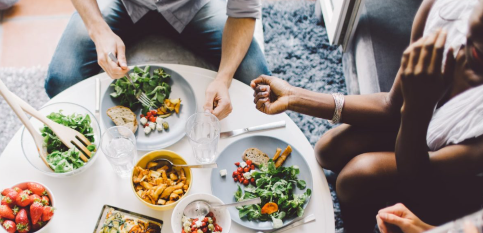
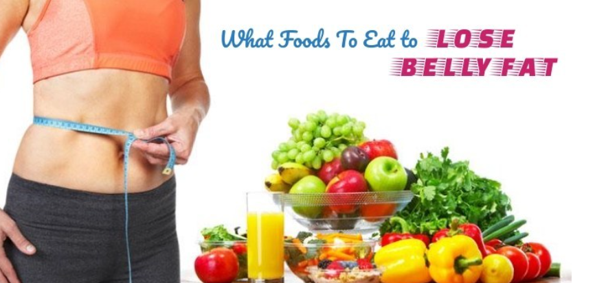

Ghar Ka Khana
To resolve your weight loss or weight gain problem you should eat
Breakfast: Poha/eggs/upma/idli/dhokla with tea/coffee.
Lunch: Dry fruits/ fruits/salads and sometimes only
liquid like fruit juices/butter milk/lassi/soup.
Dinner:Roti/parantha with sabji or pulav/khichdi.
For the precaution of Diabetes you should eat
vegetables nonstarchy: includes broccoli, carrots, greens, peppers,
and tomatoes.
starchy: includes potatoes, corn, and green peas.
fruits: includes oranges, melon, berries, apples, bananas, and grapes.
grains: includes wheat, rice, oats, cornmeal, barley, and quinoa.
To resolved your Thyroid related issues you should do
Foods alone won’t cure hypothyroidism. However, a combination
of the right nutrients and medication can help restore thyroid function
and minimize your symptoms.
To resolved your PCOD/PCOS related issues you should do
natural, unprocessed foods high-fiber foodsfatty fish, including salmon,
tuna, sardines, and mackerel kale, spinach, and other dark, leafy greens
dark red fruits, such as red grapes, blueberries, blackberries, and cherries
broccoli and cauliflower dried beans, lentils, and other legumes
healthful fats, such as olive oil, as well as avocados and coconuts
nuts, including pine nuts, walnuts, almonds, and pistachios
dark chocolate in moderation spices, such as turmeric and cinnamon.
To resolved your Post Pregnancy Weight Loss related issues you should takes
Fiber :
Food rich in fiber improves your digestive health. Consuming soluble fiber keeps your hunger hormones in check and helps you eat less as a result.
Protein :
Lean meat, eggs, fish, dairy and other sources of healthy protein can boost your metabolism and bring down your calorie intake by decreasing your appetite.Eat protein rich foods.
Complex carbohydrates :
Complex carbohydrates provide you with energy all around the day, as they take longer to break down.
Food that fight Belly Fat
Bananas
Citrus fruits
Oats
Eggs
Nuts
Pulses
Pregnancy Diet
Eggs: Eggs, considered as superfoods, provide protein, vitamins and minerals.
Fortified Breakfast Cereals.
Bananas.
Sweet Potatoes.
Lean Meat.
Whole Grain Bread.
Nut Butter.
Oatmeal.